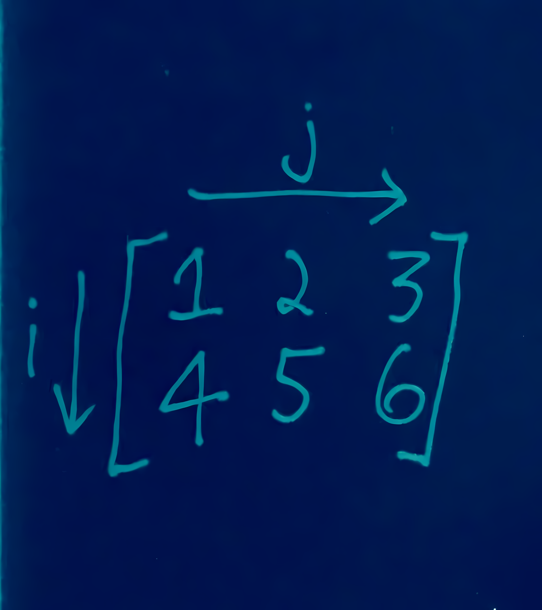

Intuitively Approaching Einstein Summation Notation
Putting it in an einsum-ple manner.
This post covers einstein summation notation syntax in terms of programming languages.

Einstein summation notation (or einsum notation for short) is a handy way to write various matrix operations in a succinct, universal manner. With it, you can probably forget all the various symbols and operators there are and stick to one common syntax, that once understood, can be more intuitive.
For example, matrix multiplication can be written as ik, kj -> ij and a transpose of a matrix can be written as ij -> ji.
Let’s figure this out.
General Rules
The following are two general rules one can use to quickly write einsum notation.
Repeating letters between input arrays means that values along those axes will be multiplied together.
Omitting a letter from the output means that values along that axis will be summed.
However, I don’t find these rules intuitive, even a little confusing. Why?
Matrices have the order of row by column. A 2x3 matrix has 2 rows and 3 columns. When we perform matrix multiplication, we take the dot product of each row in the first matrix with each column in the second matrix.
However, when the einsum rules above — specifically the first rule — are used to denote matrix multiplication (\(ik, kj \rightarrow ij\), as depicted below), the order of a matrix appears to change.

In order for the einsum rules and the definition of matrix multiplcation above to stay consistent, \(k\) now denotes the rows in the first matrix and columns in the second matrix, thereby changing the order of a matrix to column by row.
But even if we let \(k\) denote the columns in the first matrix, we end up doing dot products with each column in the first matrix and with each row in the second matrix.
Not intuitive.
A More Intuitive Way
The key to understanding einsum notation is to not think of axes, but of iterators. For example, \(i\) is an iterator that returns the rows of a matrix. \(j\) is an iterator that returns the columns of a matrix.
Let’s begin with a relatively more simple example: the hadamard product (also known as the elementwise product or elementwise multiplication.)
Hadamard Product
We have the following two matrices.
\[ A = \begin{bmatrix} 1 & 2 & 3 \\ 4 & 5 & 6 \\ 7 & 8 & 9 \end{bmatrix}, B = \begin{bmatrix} 9 & 8 & 7 \\ 6 & 5 & 4 \\ 3 & 2 & 1 \end{bmatrix} \]
To access the element 8 in matrix \(A\), we need to return the second row and first column1. This can be denoted as \(a_{21}\). The first digit in the subscript refers to the row and the second refers to the column. We can refer to any entry generally as \(a_{ij}\).
1 This assumes the matrix is zero indexed. This means \(\begin{bmatrix} 1 & 2 & 3 \end{bmatrix}\) is the zeroth row of \(A\).
Taking the hadamard product looks like this.
\[ \begin{bmatrix} 1 & 2 & 3 \\ 4 & 5 & 6 \\ 7 & 8 & 9 \end{bmatrix} \odot \begin{bmatrix} 9 & 8 & 7 \\ 6 & 5 & 4 \\ 3 & 2 & 1 \end{bmatrix} = \begin{bmatrix} 1 \cdot 9 & 2 \cdot 8 & 3 \cdot 7 \\ 4 \cdot 6 & 5 \cdot 5 & 6 \cdot 4 \\ 7 \cdot 3 & 8 \cdot 2 & 9 \cdot 1 \end{bmatrix} = C \]
In words, what’s happening is that we’re looping through all the rows of \(A\) and \(B\). For each row, we also loop through each column and multiply those columns together.
\(\text{for row in } A \text{ and } B\)
\(\text{for col in } A \text{ and } B\)
\(a_{\text{rowcol}} \cdot b_{\text{rowcol}} = c_{\text{rowcol}}\)
\(\text{for } i \text{ in } A \text{ and } B\)
\(\text{for } j \text{ in } A \text{ and } B\)
\(a_{ij} \cdot b_{ij} = c_{ij}\)
Let’s focus on that last line above.
\[a_{ij} \cdot b_{ij} = c_{ij}\]
This line represents elementwise multiplication. For each row \(i\) in \(A\) and \(B\), we iterate through each column \(j\) in those rows, and take their product.
In einsum notation, we can more succinctly write this as \(ij, ij \rightarrow ij\). This has 4 parts.
- \(ij\) refers to the iterators working on the rows and columns of \(A\) — \(i\) works on the rows and \(j\) works on the columns.
- \(ij\) refers to the exact same iterators working on \(B\).
- \(\rightarrow\) tells us an output will be returned.
- \(ij\) refers to the exact same iterators that will be responsble for making up the output matrix \(C\). The location \(ij\) says where the product of two elements will be located in \(C\).
Matrix Multiplication
Let’s cover matrix multiplication in the same manner as above.
\[ A = \begin{bmatrix} 1 & 2 \\ 3 & 4 \end{bmatrix} , B = \begin{bmatrix} 5 & 6 \\ 7 & 8 \end{bmatrix} \]
\[ \begin{bmatrix} 1 & 2 \\ 3 & 4 \end{bmatrix} \cdot \begin{bmatrix} 5 & 6 \\ 7 & 8 \end{bmatrix} = \begin{bmatrix} (1 \cdot 5) + (2 \cdot 7) & (1 \cdot 6) + (2 \cdot 8) \\ (3 \cdot 5) + (4 \cdot 7) & (3 \cdot 6) + (4 \cdot 8) \end{bmatrix} = C \]
Matrix multiplication simply involves taking the dot product of each row in the first matrix with each column in the second matrix.
We’ll need to use 3 iterators for this: one iterator \(i\) to loop through the rows of \(A\), another iterator \(j\) to loop through the columns of \(B\), and a third iterator \(k\) to loop through the elements in a row and column.
\(\text{for row in } A\)
\(\text{for col in } B\)
\(\text{for ele in } A_{\text{row}} \text{ and } B_{\text{col}}\)
\(a_{\text{rowele}} \cdot b_{\text{elecol}} \mathrel{+}= c_{\text{rowcol}}\)
\(\text{for } i \text{ in } A\)
\(\text{for } j \text{ in } B\)
\(\text{for } k \text{ in } A_{i} \text{ and } B_{j}\)
\(a_{ik} \cdot b_{kj} \mathrel{+}= c_{ij}\)
Let’s focus in on the last line above.
\[ a_{ik} \cdot b_{kj} \mathrel{+}= c_{ij} \]
This can more succinctly be written in einsum notation as \(ik, kj \rightarrow ij\) — for each row \(i\) in \(A\), and for each column \(j\) in \(B\), iterate through each element \(k\), take their product, and sum the those products. The location of the output of the dot product in the output matrix \(C\) is \(c_{ij}\).
Various Examples
1D Operations
\[ A = \begin{bmatrix} 1 \\ 2 \\ 3 \end{bmatrix}, B = \begin{bmatrix} 4 \\ 5 \\ 6 \end{bmatrix} \]
Returning a View of \(A\)
Pseudocode
For each row \(i\), output the row.
Einsum Notation
\(i \rightarrow i\)
Summing the Values of \(A\)
Pseudocode
Iterate through each row \(i\), and sum all rows.
Einsum Notation
\(i \rightarrow \phantom{i}\)
A scalar is output, hence no output iterator.
Hadamard Product of \(A\) and \(B\)
Pseudocode
For each row \(i\) in \(A\) and \(B\), multiply them together.
Einsum Notation
\(i, i \rightarrow i\)
Dot Product of \(A\) and \(B\)
Pseudocode
For each row \(i\) in \(A\) and \(B\), multiply them together, and sum the products.
Einsum Notation
\(i, i \rightarrow \phantom{i}\)
A scalar is output, hence no output iterator.
Outer Product of \(A\) and \(B\)
Pseudocode
For each row \(i\) in \(A\), multiply it with each row \(j\) in \(B\).
Einsum Notation
\(i, j \rightarrow ij\)
The outer product involves multiplying each element in \(A\) with all elements in \(B\).
\(\text{for row in } A\)
\(\text{for another-row in } B\)
\(a_{\text{row}} \cdot b_{\text{another-row}} = c_{\text{rowanother-row}}\)
\(\text{for } i \text{ in } A\)
\(\text{for } j \text{ in } B\)
\(a_{i} \cdot b_{j} = c_{ij}\)
2D Operations
\[ A = \begin{bmatrix} 1 & 2 & 3 \\ 4 & 5 & 6 \\ 7 & 8 & 9 \end{bmatrix} , B = \begin{bmatrix} 9 & 8 & 7 \\ 6 & 5 & 4 \\ 3 & 2 & 1 \end{bmatrix} \]
Return a View of \(A\)
Pseudocode
For each row \(i\), iterate through each column \(j\) and output it.
Einsum Notation
\(ij \rightarrow ij\)
Transpose \(A\)
Pseudocode
For each row \(i\), iterate through each column \(j\) and output it in \(C\) at row \(j\) and column \(i\).
Einsum Notation
\(ij \rightarrow ji\)
Return the Main Diagonal of \(A\)
Pseudocode
For each row \(i\), iterate through each column \(i\) and output it.
Einsum Notation
\(ii \rightarrow i\)
Obtain the Trace of \(A\)
Pseudocode
For each row \(i\), iterate through each column \(i\) and sum them.
Einsum Notation
\(ii \rightarrow \phantom{i}\)
A scalar is output, hence no output iterator.
Sum the Rows of \(A\)
Pseudocode
For each row \(i\), iterate through each column \(j\) and sum them.
Einsum Notation
\(ij \rightarrow j\)
Sum the Columns of \(A\)
Pseudocode
For each column \(j\), iterate through each row \(i\) and sum them.
Einsum Notation
\(ij \rightarrow i\)
Hadamard Product of \(A\) and \(B\)
Pseudocode
For each row \(i\) in \(A\) and \(B\), iterate throuch each column \(j\), and take their product.
Einsum Notation
\(ij, ij \rightarrow ij\)
Hadamard Product of \(A\) and \(B\) Transposed (\(A \odot B^{T}\))
Pseudocode
For each row \(i\) in \(A\), and for each row \(j\) in \(B\), iterate through each column \(j\) in \(A\) and each column \(i\) in \(B\), and take their product.
Einsum Notation
\(ij, ji \rightarrow ij\)
Matrix Product of \(A\) and \(B\)
Pseudocode
For each row \(i\) in \(A\), and for each column \(j\) in \(B\), iterate through each element \(k\), take their product, and then sum those products.
Einsum Notation
\(ik, kj \rightarrow ij\)
Each Row of \(A\) Multiplied with \(B\)
Pseudocode
For each row \(i\) in \(A\), and for each row \(j\) in \(B\), iterate through each column \(k\) and take their product.
Einsum Notation
\(ik, jk \rightarrow ijk\)
A three dimensional tensor is output, hence the three output iterators.
Every Element of \(A\) Multiplied with \(B\)
Pseudocode
For each row \(i\) in \(A\), iterate through each column \(j\) and multiply it with each row \(k\) in \(B\) by iterating through each column \(l\) in that row \(k\).
Einsum Notation
\(ij, kl \rightarrow ijkl\)
A four dimensional tensor is output, hence the four output iterators.
Conclusion
And that’s that! The key is to think in terms of iterators that return locations in a matrix.
It may help to implement the operations above by yourself through pencil and paper, and in a programming languge too.
If you have any comments, questions, suggestions, feedback, criticisms, or corrections, please do post them down in the comment section below!